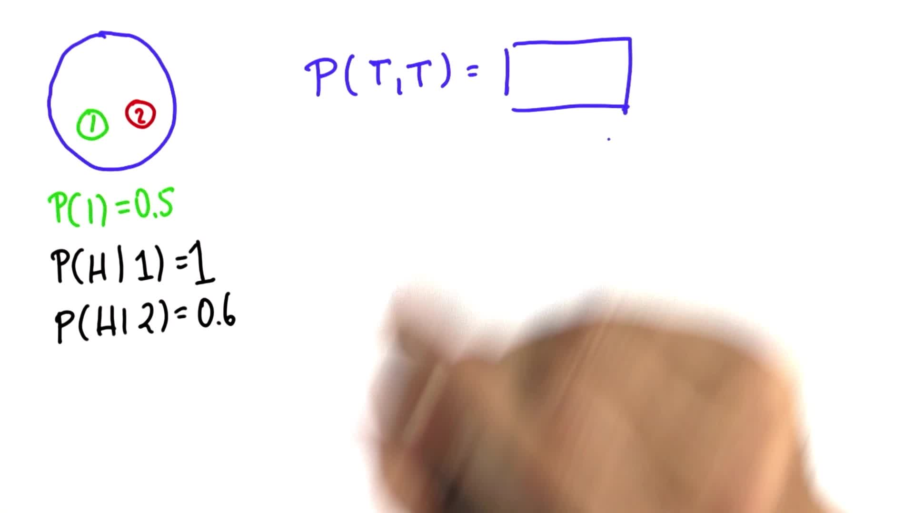

14. Two Coins 4
Two Coins 4
Question:
Start Quiz:

Solution:
INSTRUCTOR NOTE:
To clarify, the process happening here is as follows: You choose a coin and then flip it twice. The coin is not put back and chosen again in between flips.